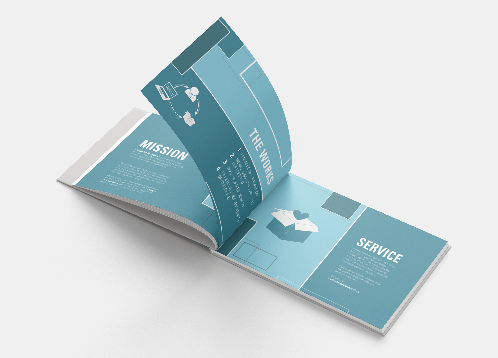
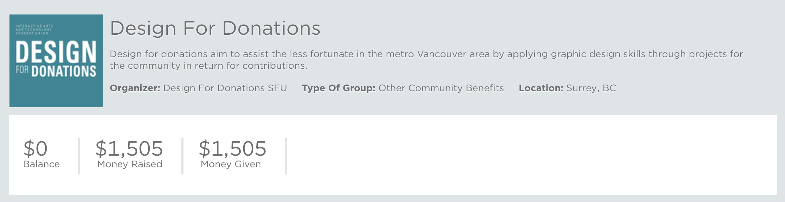

Design For Donations
Team: Interactive Arts & Technology Student Union
Role: Program Director
View Our Giving Group
View Design For Donations Program Booklet
Design for Donations aims to assist the less fortunate in the Metro Vancouver area by applying graphic design skills through projects for the community in return for contributions.

MY ROLE
I expressed interest in the Design For Donations program early in its inception by the Interactive Arts and Technology Student Union (IATSU). As the terms for the executive teams change quickly, I was handed the role of Program Director early on and managed the program for over 2 years. I liked the idea of helping students hone their skills while contributing to causes within our community and helped to create some of our mission statements.
As the program director, I connected client requests IATSU received from the university or other small businesses to our students. This included delegating tasks, communicating with several different parties, managing finances and contracts. I also held weekly touch bases with the student union updating them on the status of the projects and worked with student union members to grow the program. For each project that was done by a student, proceeds were split between the designers and a charity or donated wholly on behalf of the students and the clients.
BRANDING MATERIAL
I made several branding materials to promote throughout our university as well as at local craft fairs about our services. Some of these branding materials included buttons, business cards, and promotional cards. A fellow designer created our first Program Booklet, and I redesigned it to include some of our accomplishments later into the program.
REFLECTION
I learnt a lot from managing this program during my time as an executive member of IATSU which allowed me to practice industry skills early on in my undergraduate career. Unfortunately, after the first year and a half of its run, students lost interest in the logistics for the program, so I continued to run the program single-handedly for the remaining projects to finish off. In the end, it was still a very enriching and fulfilling program to be a part of and I am very proud that throughout the few years of the program's run, we were able to raise $1,500 CAD towards local charitable foundations.